如何用 AI 把隨手拍的旅行照片與零碎筆記，變成一份可以被重新閱讀、重新走一遍的策展級個人知識庫——以北歐四國 15 日實戰案例為例。
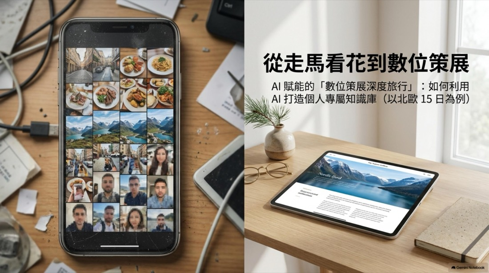
長途拉車行程最容易掉進這三個陷阱——不是不想深入了解，是現場真的沒有餘力。
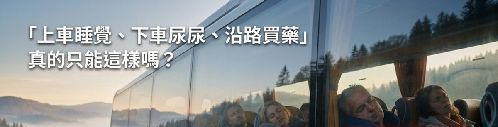
歷史太長、資訊太雜，催眠效果極佳，過耳即忘。
想了解路邊建築或植物，現場 Google 海撈耗時費力又掃興。
長途旅行已經夠累，現場根本沒有心力做深度研究。
問題不在於你不夠認真，而在於「理解」與「體驗」被迫擠在同一個時間點發生。
深度旅行的標準，一直被誤解了。
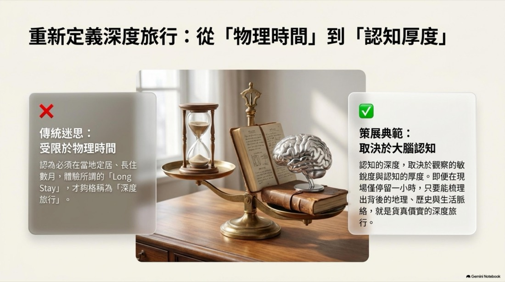
認為必須在當地定居、長住數月，體驗所謂的「Long Stay」，才夠格稱為「深度旅行」。
認知的深度，取決於觀察的敏銳度與認知的厚度。即便在現場僅停留一小時，只要能梳理出背後的地理、歷史與生活脈絡，就是貨真價實的深度旅行。
把旅行者的身分，從被動的消費者，換成主動的採集者與編撰者。
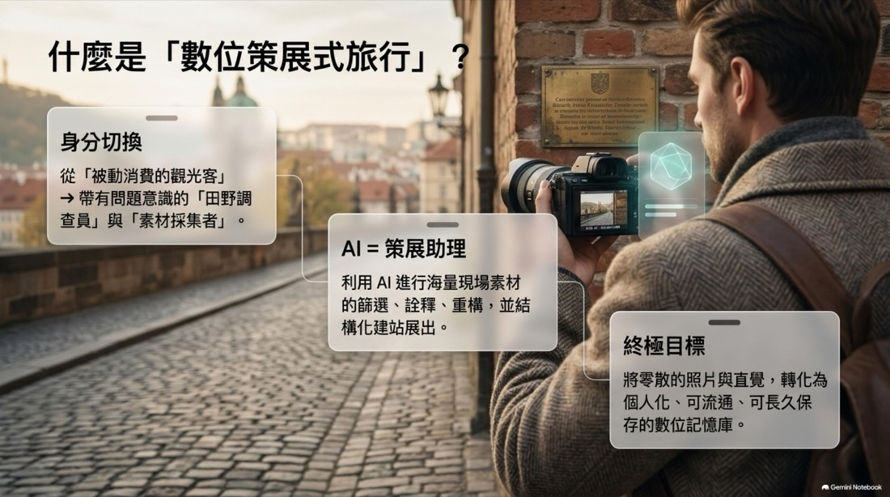
從「被動消費的觀光客」→ 帶有問題意識的「田野調查員」與「素材採集者」。
利用 AI 進行海量現場素材的篩選、詮釋、重構，並結構化建站展出。
將零散的照片與直覺，轉化為個人化、可流通、可長久保存的數位記憶庫。
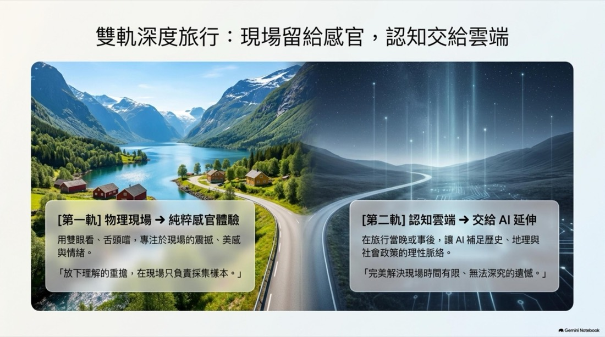
用雙眼看、舌頭嚐，專注於現場的震撼、美感與情緒。
「放下理解的重擔，在現場只負責採集樣本。」
在旅行當晚或事後，讓 AI 補足歷史、地理與社會政策的理性脈絡。
「完美解決現場時間有限、無法深究的遺憾。」
行前、當下、事後——每個階段，你的角色與任務都不一樣。點選下方分頁看細節。
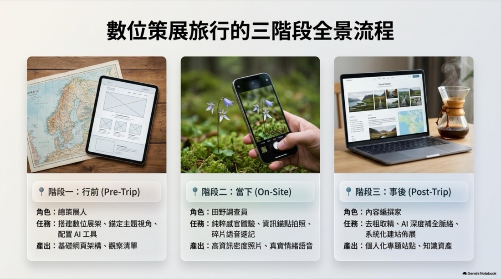
不管手上拿到的是旅行社給的紙本行程表，還是網路上的行程網頁，都可以直接掃描、拍照，或複製貼上，交給 AI Agent 讀取解析——讓 AI 把日期、地點、交通方式自動整理成結構化資料，生成一個最基礎的「數位行程網站」骨架。這是後續一切策展工作的地基：有了骨架，才有地方讓「每日流水線」與「主題專題」逐步往上疊加。
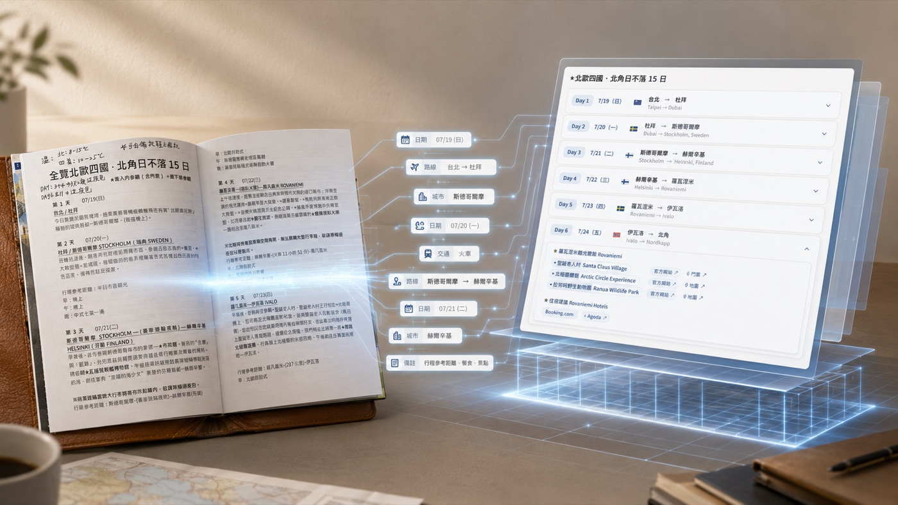
實例：「全覽北歐四國・北角日不落 15 日」這個主站，最初就是把行健旅遊給的紙本行程表交給 AI 讀取，才長出這個帶有 15 天流水線骨架的基礎網站——之後才在上面陸續疊加地圖、匯率看板、購物清單。
預先定下 2–3 個切入點，帶著問題出發（例如：北歐生態、咖啡生活美學、公共政策）。
預先建好網頁或筆記目錄，預留「每日流水線」與「主題專題區塊」等待現場填入。
將匯率換算、當地實用語句、物種辨識的 AI 提示詞指令提前寫好，現場秒開秒用。
「全覽北歐四國・北角日不落 15 日」就是行前搭好的數位展架——內建瑞典/芬蘭/挪威/丹麥四國即時匯率換算看板、每天一張 Leaflet 路線地圖（用編號大頭針標出當日景點順序，例如布里斯達冰河那天的三個停留點），以及依國家分類、隨行程天數自動切換的「當地特產與購物推薦」清單。這些都是出發前就先搭好架子，現場只要照著填。
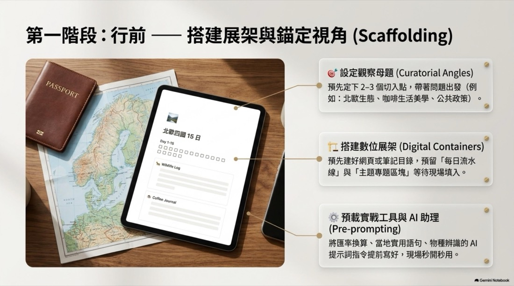
不只拍大景，刻意拍下「解說牌、建築銘牌、動植物特寫、超市標籤」。這些是回國後讓 AI 反查脈絡的資訊錨點。
利用拉車或休息空檔，錄下 30 秒口語速記，捕捉當下最真實的情緒與感官（如：「峽灣水色偏乳藍」、「咖啡果酸明亮」）。
隨手拍照辨識花草野鳥，得知名稱後即收手，不深究，留待事後處理。
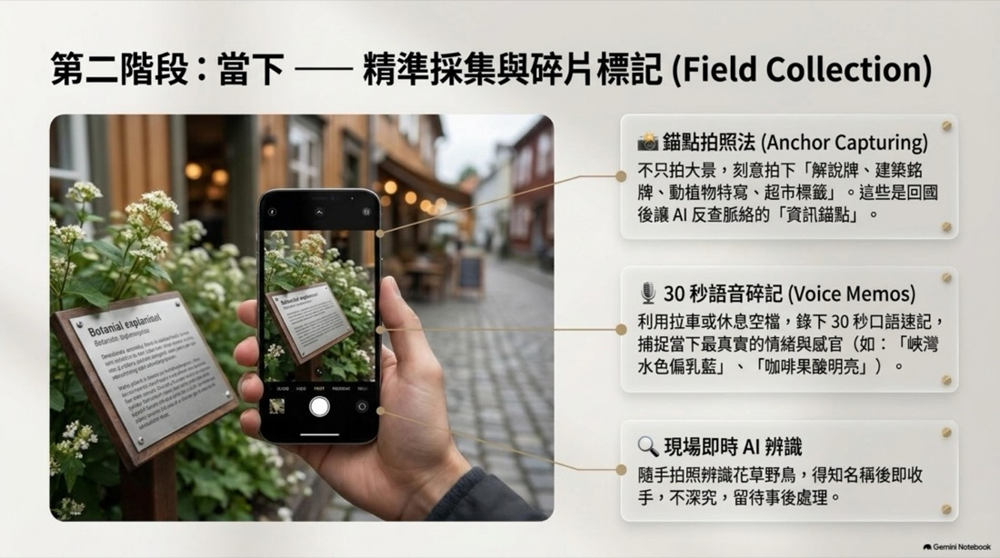
從海量素材中，挑選出真正具備敘事代表性的影像切片。
將照片錨點與語音丟給 AI，還原並延伸其歷史背景、生態習性或制度設計。
利用 AI 協助排版，將碎散資料烹調成一道道脈絡分明的互動式主題站點。
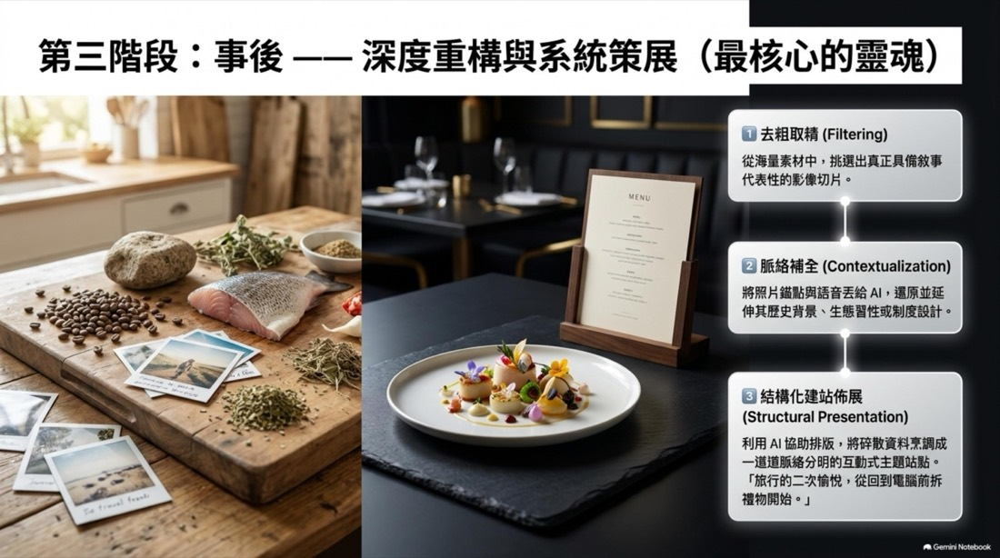
這套方法論不是紙上談兵——這是一趟真實的 15 天緊湊拉車行程，被轉化成一個主入口網站，搭配多個子主題專題站點。每張卡片都是真的網頁，點進去看看成品。
系統架構：一個主入口網站（15 天完整行程、地圖、每日流水線），搭配依觀察母題延伸出的子主題專題站點——把跟團拉車的行程，轉化為具備極高認知厚度的個人化知識作品。
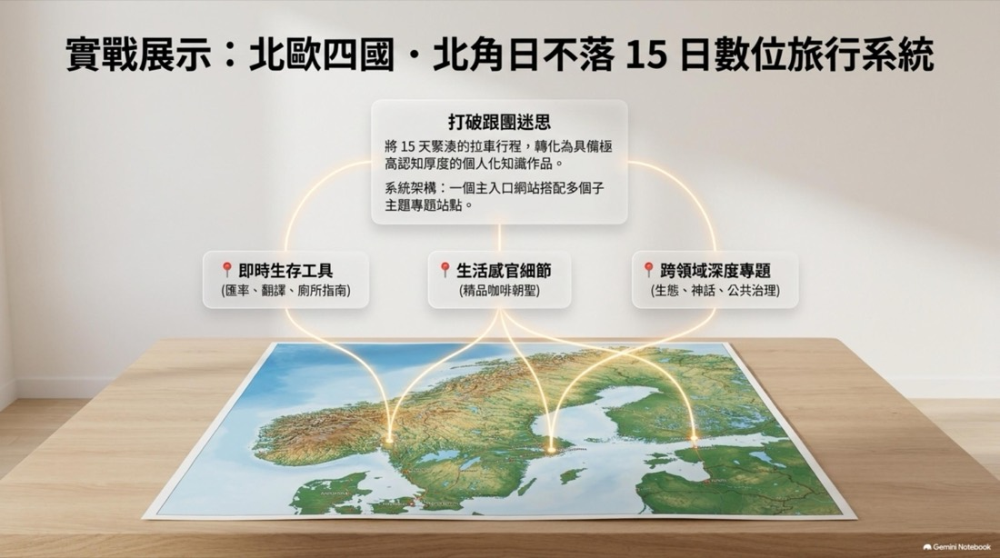
數位策展式旅行，是用來減壓的，不是用來加重負擔的。
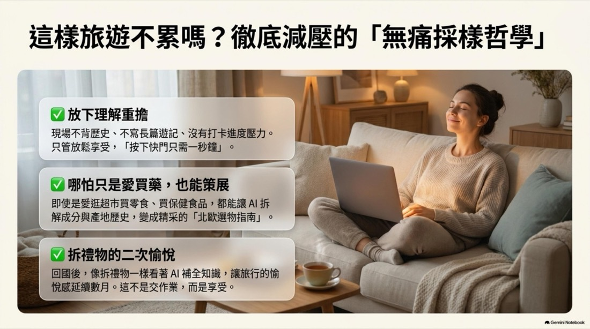
現場不背歷史、不寫長篇遊記、沒有打卡進度壓力。只管放鬆享受，「按下快門只需一秒鐘」。
即使是愛逛超市買零食、買保健食品，都能讓 AI 拆解成分與產地歷史，變成精采的「選物指南」。
回國後，像拆禮物一樣看著 AI 補全知識，讓旅行的愉悅感延續數月。這不是交作業，而是享受。
當工具接手了查證與整理，旅行剩下的，就是最本質的那幾件事。
過去算有沒有到過，現在算帶回多少脈絡。現場只停留一小時，只要讀懂了背後的地理、歷史與生活，就是深度。
照片會被遺忘，策展網頁可以重讀、重走。旅行不在回程結束，行前、當下、事後連成一條線，拆禮物的愉悅可以延續數月。
帶著母題出發，一塊解說牌、一個路邊的垃圾桶，都是一個問題。旅行變成與世界對話的方式。
理解交給雲端，人才敢放下背書的壓力，只負責看、嚐、感受。工具的用意，是讓體驗更純粹，不是取代體驗。
展示的不只是「我去過哪裡」，而是「我如何理解這個世界」。旅行的成果，從一疊相簿，變成一份作品。
意義沒有被外包。AI 補全的脈絡需要查證，拍什麼、問什麼、留下什麼，仍然是自己的判斷——「策展」的意義，就在選擇。
北歐是走完之後整理出來的成果。下面兩個，一個還沒出發，一個人根本沒到現場，都用同樣的方式先策展。
出發前就先把行程做成數位行程網站，再針對路上會遇到的地方各做一篇深讀。這就是「行前」階段實際的樣子：現場只需要看、拍、感受，理解已經先備好。
這是協作給同學的行程網頁：弗留利、斯洛維尼亞、克羅埃西亞的邊境行旅。人雖然沒到現場，卻因為整理行程而策展，把整條路線的脈絡神遊了一遍。
策展讓「到現場」不再是理解一個地方的唯一入口。